Replicator Resources
This page contains tips and tricks for replicators.
Rules of Behaviour
- Never contact an author without explicit instruction of the data editor. This serves mainly to protect your own privacy.
- If you find some inconsistencies between package output and paper content, don’t stop at saying for example “table 3 does not correspond”. Make sure to point out in which way it does not correspond; The fact that it does not seem to correspond on your computer does not necessarily mean that it does not correspond on the author’s computer as well (see below on environments).
- In your report, make good use of textual output from package (like produced tables) and output in paper side by side which does not correspond. Same holds for figures (best to include as screenshots).
- In your report, try to adopt a pleasant and forthcoming tone of language, it will make any interaction easier.
Important Things to Look Our For 🧐
Hard Coded Numbers
Without proper documentation of how they were obtained, hard coded numbers are not admissible in code that generates results like plots or tables.
Plots are particularly critical here.
A fairly quick part of your work should be a scan of all source code to identify hard coded numbers and make sure everything is proper with those.
Here is an example which triggers our suspicion: The below code is used to make a bar chart. However, the heights of the bars are hard coded as numbers. If it is not obvious where the numbers come from, then this fact should be a prominent feature in your report.
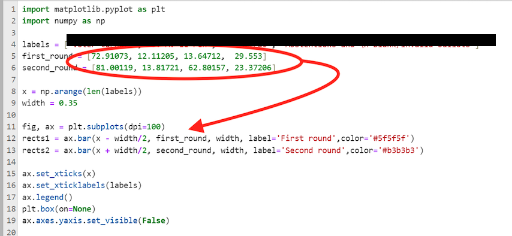
hard coded numbers in code for a plot (python)
How to find hard coded numbers?
Regular expressions (Regex) are the perfect tool for this. I recommend opening the full replication package in VScode. Here is an example. You can download the example package as usual from our dropbox at EJ-2-submitted-replication-packages/Oswald-123456-R1.
Open Package in VScode
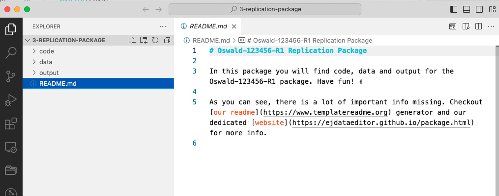
opening full replication package in VScode Next, activate the search function, either by clicking or by typing
Cmd+Shift+F: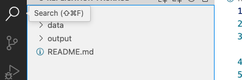
activating search in entire project Make sure to turn on regex search by clicking the symbol
.*in the right of the search text box. Now you can enter regex search terms. Here, I’m entering\dfor digits (i.e. numbers), and I’m saying{3,10}to instruct the search to look for sequences of numbers with length in between 3 and 10. That is, numbers ranging from 3 up to 10 digits. You can change that of course. Notice how the search returns immediately all occurences of such numbers in the project.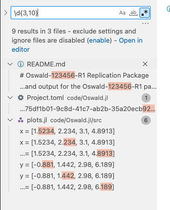
using regex search to look for numbers between 3 and 10 digits long. plots.jlseems to contain hard coded numbers as source code.Finally, look whether any of those numbers do appear in a code file. Here, the
plots.jlseems to be suspicious. Double click on a particular search results opens the relevant source file. Gotcha!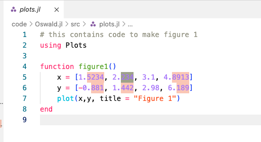
Example of hard coded numbers to generate a plot. Unless the origin and reproducibililty of those numbers is clearly documented in the readme and in the source code, this is not admissible.
Missing Software Libraries in README
- It is very common that authors forget to list all required software libraries, or do not list the version information that goes with those libraries.
- Best practice would be to use an empty system where no libraries are pre-installed. The nuvolos platform is helpful here, because this is the case there.
Environments
- What is an environment?
- Why does my code not work on your computer?
python
python?
First things first. How can you get python on your computer? I strongly recommend the conda distribution - please follow instructions to install. This is what is available on nuvolos (i.e. nothing to do for python on nuvolos, it’s there.)
Next, on to our case study. An author says:
We use python. You must install the
networkxpackage from pip. The rest of the packages is standard.
This is an incomplete specification on various counts.
- We must know which
pythonversion to use. There are many. - We cannot work with the rest of the packages is standard. There is no notion of standard in this setting.
- Installing via
pipfor instance depends on which particularpythonversion is installed, and how that particular version ofnetworkxrelates to those standard packages mentioned above.
👉 It is highly likely that following those instructions, we end up with a vastly different set of package (and base python!) versions than what the authors used on their machine.
👉 Not good, because this alone could lead to diverging results and/or errors.
Easiest with anaconda on nuvolos or your own machine, but base python also has a solution.
I recommend the conda route.
Let’s solve this particular case. We will create a virtual environment for ourselves, making some assumptions along the way. We can at least communicate with the authors on that assumed basis. Therefore, we open VScode and look at the notebook file (notice this is much quicker than opening a jupyterlab session). We note that in the first code box they import the required libraries. We want to have an environment containing those packages.
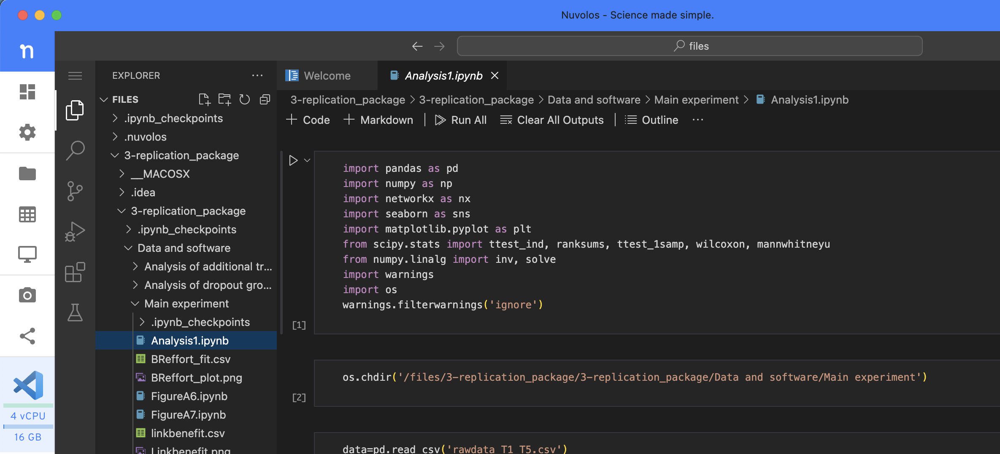
There are two ways to create an environment: on the command line or by writing a .yml file.
Creating a conda env on the command line
This is easy.
Open a terminal in VScode via the command palette (type shift-cmd-p or click cogwheel bottom left). In the command palette type
create new terminaland hit enter.In the terminal window create the new environment, maybe called with the author’s name, specifying all required versions, as well as an assumed python version:
# creates new virtual env called `author-name` # notice that the nuvolos terminal runs conda by default and tells # you that your are in the (base) environment now: (base) 11:35:56 - nuvolos:/files$ conda create -n author-name python=3.11 matplotlib pandas numpy networkx seaborn scipy Channels: - defaults - conda-forge Platform: linux-64 Collecting package metadata (repodata.json): done Solving environment: -hit
ywhen asked whether to install packages:Downloading and Extracting Packages: Preparing transaction: done Verifying transaction: done Executing transaction: done # # To activate this environment, use # # $ conda activate author-name # # To deactivate an active environment, use # # $ conda deactivateAfter it’s done, we can
activatethat environment. Notice the prompt switching to the new env.(base) 11:40:14 - nuvolos:/files$ conda activate author-name (author-name) 11:41:42 - nuvolos:/files$From that point on, we are sure what versions are being used when we say
import networkx, for example:(author-name) 11:41:42 - nuvolos:/files$ python --version Python 3.11.9 # we *asked* for that version! (author-name) 11:42:20 - nuvolos:/files$ python Python 3.11.9 (main, Apr 19 2024, 16:48:06) [GCC 11.2.0] on linux Type "help", "copyright", "credits" or "license" for more information. >>> import networkx >>> print(networkx.__version__) 3.3 # that is default version compatible with our env >>>So, we are now using
python3.11.9 andnetworkx3.3.Oftentimes, authors supply jupyter notebooks (as in the present case). We need a way to run those inside our environment. So, we also install a notebook runner, while we are in the activated env:
# install Python kernel in new conda env (author-name) 11:42:20 - nuvolos:/files$ conda install ipykernel # configure new notebook kernel (author-name) 11:42:20 - nuvolos:/files$ ipython kernel install --user --name=author-kernelNow we can
select kernelin the notebook view, i.e. we will choose the python engine which goes together with this particular environment.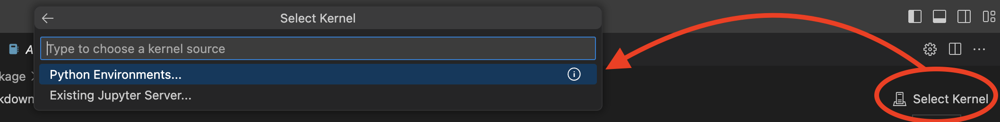
Selecting a Kernel from a pythonenvironment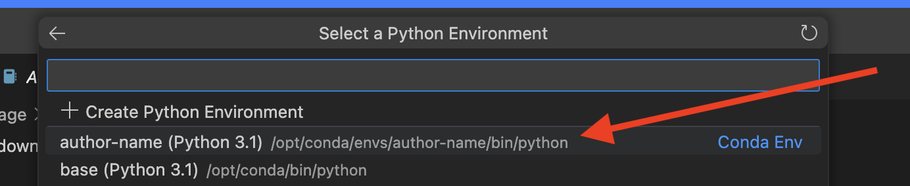
choose our created author-nameenvironmentClicking on the ▶️ button left of each cell, we can run the contained code. Here I added two code cells to print python and
networkxpackage versions.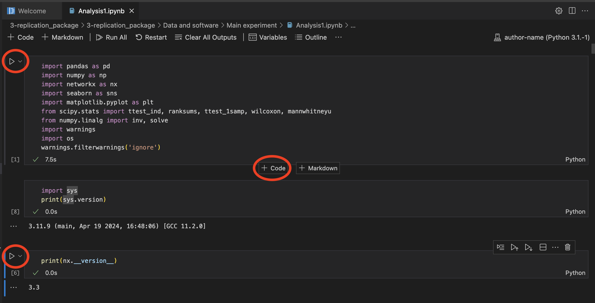
executing code in notebook using our environment. Notice that python and networkx versions correspond to our specs above.
The preceding steps of starting a notebook - from the external drive /space_mounts is illustrated in this video:
Creating a conda env via a .yml file
We could have equally well created a full recipe file, from which to build this environment. This may be useful to share with authors. You would save that as author-env.yml for instance:
name: author-name
dependencies:
- python=3.11
- matplotlib
- seaborn
- netwworkx
- pandas
- numpy
- scipy
- ipykernel
- pipThen, one can create the env via
conda env create -f author-env.ymlCreating a conda env from a supplie .yml file
Some authors actually give us such a file! In this case, the same applies:
(base) 11:49:15 - nuvolos:/files$ conda env create -f /files/Replication_package_Agostini_Bloise_Tancioni/DML_python/environment.yml
done
#
# To activate this environment, use
#
# $ conda activate ectj_abt
#
# To deactivate an active environment, use
#
# $ conda deactivate
(base) 09:52:23 - nuvolos:/files/Replication_package$ conda activate ectj_abt
(ectj_abt) 09:55:17 - nuvolos:/files/Replication_package$ python --version
Python 3.9.7
(ectj_abt) 09:55:31 - nuvolos:/files/Replication_package$ python Main.py
Conda environment ectj_abt already exists. Skipping creation.
Running the estimation for dml_JJ...If a python package does not contain a virtual environment, you must recommend the authors to add this in your report.
stata
There is an excellent guide for how to lock in add-on stata packages into a certain state. By default, there is no mechanism in stata which would version add-on packages (the user is responsible to install the correct version - which may be extremely difficult in practice because older versions may no longer be retrievable).
The relevant guide is by Julian Reif and accessible here.
julia
Environment creating is built-in with base julia in the package manager. In any given directory, type ] to enter Pkg mode. Here we create an environment at the current directory . and add two packages. The resulting files Project.toml and Manifest.toml encode the exact versions of all component packages (i.e. including dependencies of the packages we are asking for). Any user can use those 2 files to recreate the exact same software environment as the author.
(@v1.10) pkg> activate .
Activating new project at `~/replications/Oswald-123456/full-package/3-replication-package`
(3-replication-package) pkg> add GLM DataFrames
Resolving package versions...
Installed LogExpFunctions ─ v0.3.28
Installed Distributions ─── v0.25.109
Updating `~/replications/Oswald-123456/full-package/3-replication-package/Project.toml`
[a93c6f00] + DataFrames v1.6.1
[38e38edf] + GLM v1.9.0
Updating `~/replications/Oswald-123456/full-package/3-replication-package/Manifest.toml`
julia without Project.toml!
We require at least a Project.toml for any julia project. We strongly recommend supplying also a Manifest.toml from the authors.
Data Citations for exeriments
If you generate your own data via an experiment, of course you cannot cite it. If you use data from a previously published experiment, you could cite it. So: no, you don’t need either citation or a DAS if you use exclusively your own generated data. You do not need the zenodo DOI. you will obtain this at the very end of the process, so that people (including yourselves) can cite your package (including generated data) in the future.
Working on Nuvolos
Ask the Data Editor to create a new instance for you.
Memory Consumption
- Nuvolos (and any shared resource like a HPC system) will strictly enforce memory (RAM) limits.
- If your app consumes more than what is available, the app will be killed. You will not get an error message in most cases, but your app will just freeze or shut down.
- You can increase the size (CPU + RAM) by clicking on the cogwheel next to the apps start button in the “Applications” view.
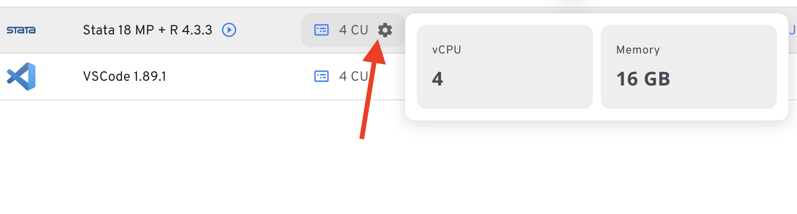
large files on nuvolos
You can try the web-based uploader which will take any URL directly:
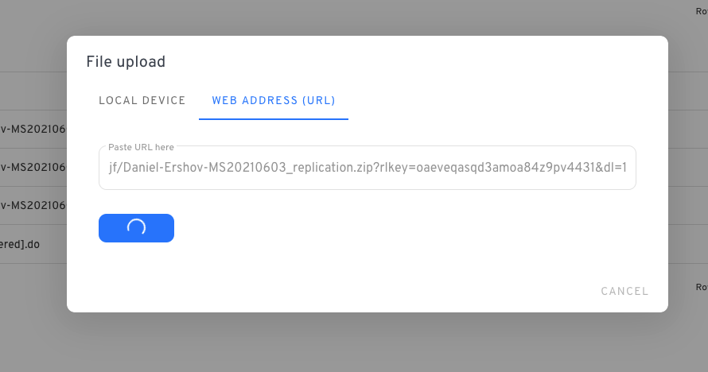
When copying the dropbox URL, remember to change ‘dl=0’ to ‘dl=1’ inside the URL. This forces the download. For example:
https://www.dropbox.com/scl/fo/gumryf1zs8lwk5zq5udo7/ABrnRWk5w859IIib/Author-YYYYMMDD-R1?*dl=1*To rename the file, open the terminal and write
mv 'old_file_name' 'new_file_name'If the file is very large, move it to the ‘large file storage’ that you can create in the ‘Project Configuration’ tab on Nuvolos.
(base) nuvolos@nuvolos:/files$ ls
'old_file_name' 'some_folder'
(base) nuvolos@nuvolos:/files$ mv 'old_file_name' 'new_file_name.zip'
(base) nuvolos@nuvolos:/files$ mv 'new_file_name.zip' /space_mounts/mount_name/For very large files, however, this does not work well and you need to use the dropbox sync integration. This will map a specific folder in your dropbox onto your nuvolos instance at /dropbox
R gotchas
The grf Random Forests Package
There is a well-documented problem with cross platform compatibility. Only a certain setting of the regression_forest command will reproduce results across different platforms. The setting concerns the arguments num.threads and seed. Please make sure those are set. Reference here and example issue here
Dealing with Large Files
Large (data) files are complicated. Not only do they consume a lot of disk space, the real problem comes from transferring them over the internet. There may be losses along the way which invalidate the file.
Suppose you have a 6GB dataset and want to quickly check whether it is identical to the previous version you obtained. You don’t want to check each row of that dataset. Instead, you could compute the md5sum, which is akin to counting bits in the file in a certain kind of way and summing them up. It’s like a digital fingerprint of a file. For example to verify that file_to_check.csv is identical you would do on your linux/Mac terminal
md5sum file_to_check.csvin both versions of the package, and verify that the result is the same. On your windows powershell you would do this
CertUtil -hashfile file_to_check.csv MD5Compression of files
- There are several compression technologies out there, indicated by various filename endings
.zip,.tar,.gz,.7zetc.
There are many different facets to compression which sometimes cause problems.
- The md5 hash of a zip file create on one machine is not necessarily identical to the md5 hash of the zip file created on another machine - despite both having the exact same content. This is because different systems use different algorithms to create the zip file.
- For zip files larger than 4GB, the macOS default archiver utility often fails with cryptic errors.
- a good solution is the
p7ziputility. Install viabrew install p7zipand used like this:7za x large_package_to_unzip.zip dest_name - We can split a zip into several smaller parts: https://superuser.com/questions/336219/how-do-i-split-a-zip-file-into-multiple-segments. For example we had to do this on this package.